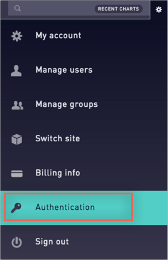
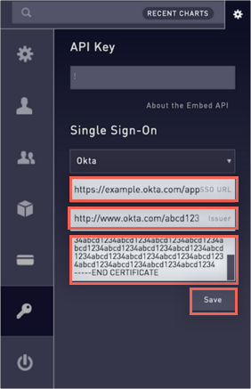
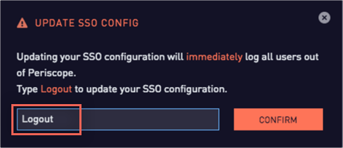

Log into Periscope Data as an administrator.
Click on the gear icon in the top right, the select Authentication.
Note that only administrators have access to these settings.

In the Single Sign-on section, enter the following:
SSO URL (Login URL/SignOn URL): Copy and paste the following:
Sign into the Okta Admin Dashboard to generate this variable.
Issuer (IDP Issuer/Entity ID): Copy and paste the following:
Sign into the Okta Admin Dashboard to generate this variable.
x509 Certificate: Copy and paste the following (in PEM Text Format):
Sign into the Okta Admin Dashboard to generate this variable.
Click Save.

Confirm your SSO settings by typing Logout, as shown here:

Done!
Notes:
IdP-initiated flows, SP-initiated flows, and Just in Time (JIT) provisioning are all supported.